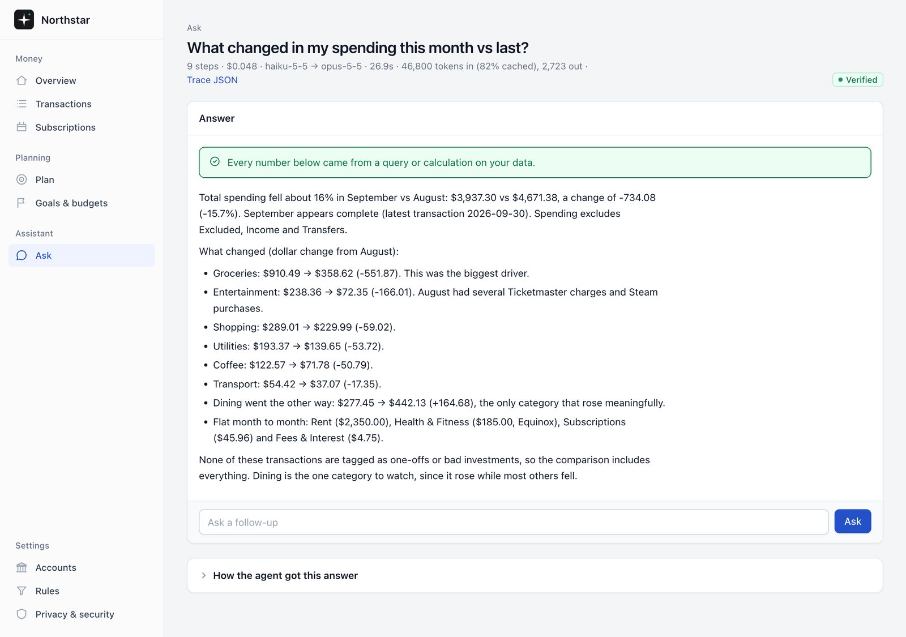

AI agents · personal financeOct 2026
Northstar (Personal Finance Agent)
A personal finance agent built to be trusted with numbers. It connects to bank accounts through Plaid or CSV exports, answers questions in plain English, and plans for retirement. Every figure is checked against the underlying data before it’s shown.
How it works
- The agent answers by running read-only SQL and a safe calculator. A number checker rejects any answer with a figure that didn’t come from a tool result.
- A privacy layer removes names, phone numbers and account digits before anything reaches the API, and logs every character sent.
- Retirement planning across 401(k) and Roth IRA accounts: contribution limits, the amount needed to max out, and missed-match warnings.
- A projection of the path to financial independence, based on the last 12 months of actual spending.
- Runs on a Mac and installs on a phone, and still shows the last-synced numbers when the Mac is off.
Key decision: keep the model away from the arithmetic. Categorization, insights and planning are deterministic code; the LLM writes queries and explains results, and every number it states has to trace back to one.